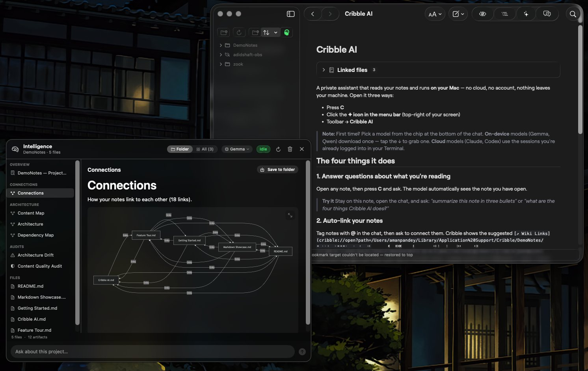
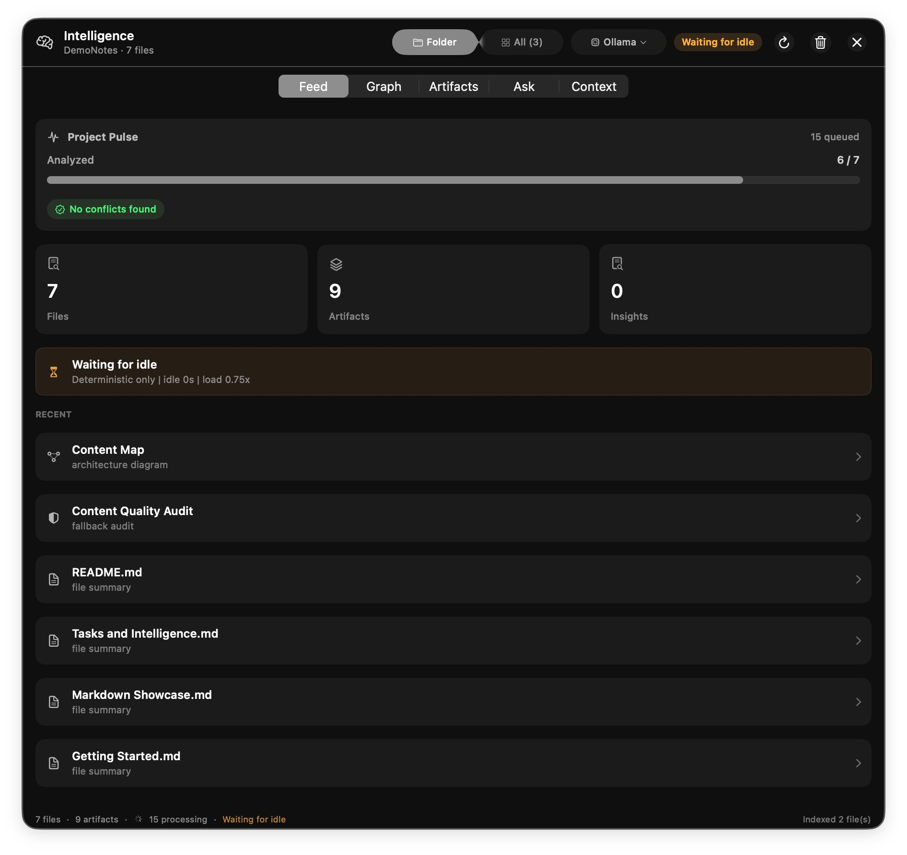
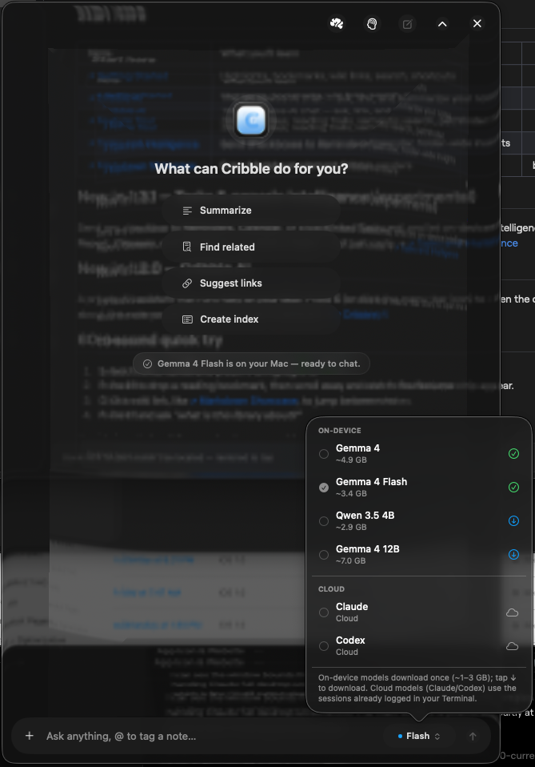
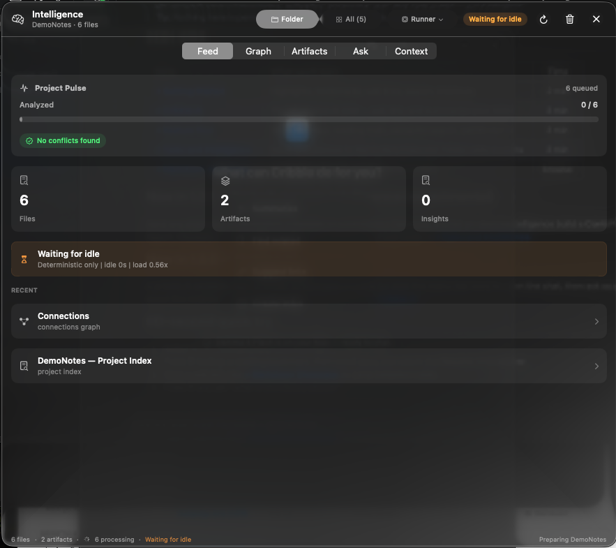

Read every note.
Know your project.
Cribble is a calm, native Markdown reader for macOS. Night Shift makes everyday reading smoother, while the preview line adds private project intelligence when you ask for it.

Plain Markdown
Open folders in place. Your notes stay readable in any editor.
Local-first
No account, no telemetry, and no Cribble cloud service.
AI is opt-in
Use on-device models, local runners, or your signed-in CLI tools.
Apache-2.0
Open source, maintainer-led, and contribution friendly.
Markdown Reader
Every format,
rendered right.
Cribble renders notes as a native reading workspace: headings, tables, code, math, Mermaid diagrams, images, task lists, highlights, reading bookmarks, and wiki links.
- Rich Markdown without importing or converting your folder.
- Highlights, reading notes, bookmarks, and last-open restore.
- Multiple folders, linked files, pathfinding, search, and outline navigation.
- Task checkboxes can flow to Tasks.md, Reminders, or Calendar.
Markdown Showcase
Cribble renders rich Markdown natively, with highlights, wiki links, and a reader built for long sessions.
reader.open('Showcase.md')
Tasks, Mermaid, math, relative images, and tables are part of the same calm surface.
Night Shift 1.4.0
Smoother reading.
Safer handoffs.
Night Shift is the everyday release: less friction on first launch, simpler recovery paths, clearer AI review states, and a stricter contribution path for people designing extensions.
- Zero-file handoffs for README starters, search misses, reading trails, diagnostics, and review templates.
- DemoNotes, Help, and starter checklists now guide beginners into tasks, decisions, research, and remote-runner review.
- Extension contribution guidance stays read-only first, least-writing, and native SwiftUI by default.
- Import-lane and AI diff empty states point to the next safe action instead of dead-ending.

Project Intelligence.
In the background.
The preview line turns a folder into a living local map: background indexing, generated digests, graphs, architecture notes, safer writes, and a native HUD for asking about the project.
- Deterministic graph and artifact views appear without relying on a model first.
- Ask about a project using local context from files you already own.
- Manual Apple Silicon preview, separate from the stable Sparkle update path.
Cribble AI
Your model.
Your machine.
The Chat HUD stays small and contextual. It can see the note you are reading, attach files, suggest links, summarize, create indexes, and switch models without turning Cribble into a hosted service.
- On-device Gemma and Qwen models download once and can run offline.
- Claude and Codex work through your existing local CLI sessions.
- Model selection is explicit, visible, and easy to change per workflow.
- AI features remain opt-in and review-first.


Artifacts,
not surprises.
Generated summaries, diagrams, audits, task exports, and project notes appear as reviewable artifacts. Cribble should help you understand and organize files, not silently rewrite them.
- Generated writes are no-clobber and undoable.
- Artifact work is bounded so large folders stay responsive.
- Context digests help chat answers stay grounded in the current folder.
- Performance modes adapt indexing to the size of your library.
Open Source
Built in the
open.
Cribble is Apache-2.0 licensed. Contributions are welcome for bugs, docs, tests, rendering fixes, accessibility, diagnostics, and provider integrations. Product direction and official releases remain maintainer-led so the project keeps a clear center.
Direct PRs
Bug fixes, docs, tests, small polish, rendering fixes, and accessibility improvements.
Discuss first
New features, UX direction, AI behavior, storage policy, and release/distribution changes.
Audit the trust model
Local-first behavior, sandbox access, provider integrations, diagnostics, and AI code paths are visible.
Download Cribble
Use Night Shift for the smooth everyday Mac app. Try the Intelligence Preview when you want the newest project-aware workflows.
Cribble 1.4.0
- Simpler shortcuts: memorable keys for search, chat, intelligence, tasks, reading trail, focus, highlights, and bookmarks.
- Review-first AI: new notes, link suggestions, task extraction, diffs, and empty states stay explicit before writing.
- Extension foundation: propose quick actions, import lanes, renderers, and runner profiles without hidden execution.
- Remote intelligence review: clear handoffs before a VPS, team GPU, or third-party runner receives note context.
Cribble 1.3.2
- Project Intelligence HUD, graphs, context digests, and artifacts
- Richer image rendering and checkbox export workflows
- Faster indexing, hard job time bounds, and adaptive performance modes
- Safer generated writes with no-clobber behavior and undo
Cribble 1.2.1
Use this if you want the most conservative build for plain Markdown reading, highlights, bookmarks, wiki links, and the original Cribble AI basics.
Privacy
Local-first by design.
Your Markdown stays on your Mac. Cribble is a reader, not a service, and the app is built around explicit folder access.
Support
Questions, bugs, ideas.
Write directly, open an issue, or discuss larger feature ideas before implementation.
Does Cribble store my notes?
No. It reads folders in place and keeps notes as plain Markdown.
Does it work with Obsidian folders?
Yes. Cribble understands standard Markdown and wiki links, so most vaults open as-is.
Can I edit notes in Cribble?
Cribble is primarily a reader. It supports reading annotations, task exports, and reviewable generated writes.